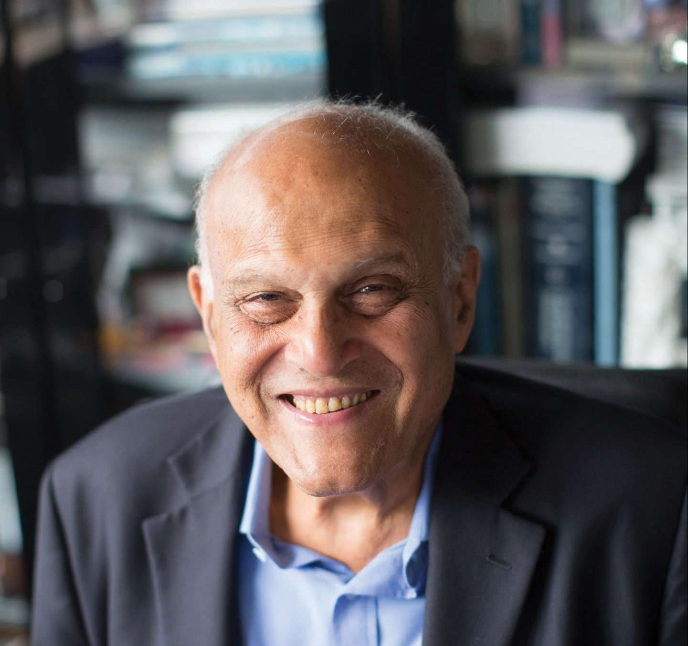

The surgeon who taught a generation of failing hearts how to keep going.

Magdi Habib Yacoub was born in 1935 in the small Egyptian town of Bilbeis, into a Coptic Christian family that moved between towns for his father's work as a surgeon. Medicine ran in the household, but it was loss, not tradition, that pointed Magdi toward the heart specifically: an aunt in her early twenties died from a valve condition that, in a better-equipped hospital, could have been treated. That single, preventable death became the quiet engine behind almost seventy years of work.
He entered Cairo University's medical school at fifteen on a scholarship and qualified as a doctor in 1957. Within a few years he had left for Britain, joining a fellowship in London and later working alongside surgeon Donald Ross, with whom he helped refine a technique for replacing a damaged heart valve with the patient's own pulmonary valve. A stint at the University of Chicago followed, but Yacoub had already promised Harefield Hospital, west of London, that he would return — and in 1973 he did, as a consultant cardiothoracic surgeon.
Harefield is where his name became inseparable from heart transplantation in Britain. He began the hospital's transplant programme in 1980, and by December 1983 had carried out the country's first combined heart-and-lung transplant. Under his direction, Harefield grew into the busiest heart and lung transplant centre in the world, and two of his earliest patients went on to live for decades — one of them recognised by Guinness World Records as the longest-surviving heart transplant patient on record.
Retirement from the National Health Service in 2001 barely slowed him down. He kept operating through the charity he founded, Chain of Hope, carrying free surgery to children in countries with little access to cardiac care, and later returned to Egypt to help build the Aswan Heart Centre. Well into his eighties and nineties, he was still publishing research on growing heart valves from stem cells — proof that his curiosity about the organ never really stopped at the operating table.
Graduates from Cairo University's medical school after entering on scholarship at just fifteen years old.
Trains in London under Sir Russell Brock, works with Donald Ross on early valve-repair techniques, then spends time as an assistant professor at the University of Chicago before returning to Britain for good.
Performs the hospital's first heart transplant; the patient goes on to live a further twenty-five years.
Carries out the country's first combined heart-and-lung transplant at Harefield Hospital.
Receives a knighthood for his services to medicine and surgery.
Establishes the charity that funds heart surgery for children in developing and war-affected countries.
Co-founds the Magdi Yacoub Heart Foundation and helps launch a specialist cardiac centre on the Nile in Aswan, Egypt.
Becomes the first Egyptian to receive the Order of Merit, one of the highest honours in the UK.
Unveils a biodegradable heart valve designed to integrate with the body and grow with a young patient over time.
I am a very ordinary personSir Magdi Yacoub, speaking at the launch of his official biography, 2023
He helped move heart transplantation in Britain from a rare, high-risk experiment to a routine, survivable operation — Harefield's survival rates became a benchmark for transplant centres worldwide.
Techniques he developed or refined, including the arterial switch operation and the Ross-Yacoub valve repair, are still taught to cardiac surgery trainees today.
Through Chain of Hope and the Aswan Heart Centre, his work reaches far beyond wealthy hospitals, bringing corrective heart surgery to children who would otherwise have no access to it.
Magdi Yacoub's story is really the story of a preventable death he refused to forget. Nearly seventy years after his aunt's death convinced him to study medicine, he is still trying to make sure other families never have to repeat it — one valve, one transplant, one child at a time.